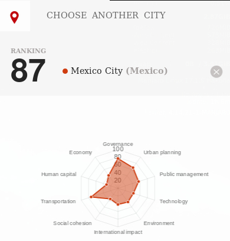
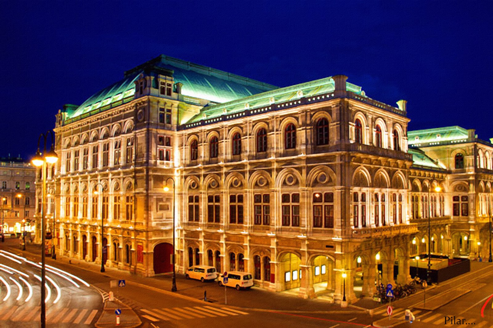
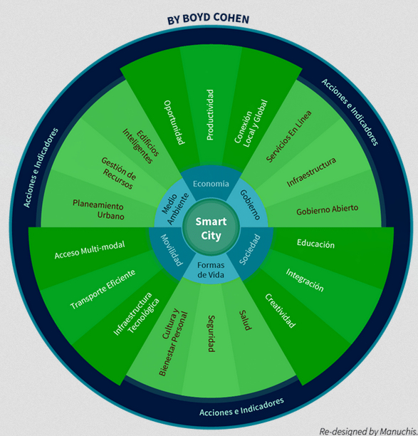

The concept of smart city is a new way to understanding the large concentration of people. With the demographic explotion is necessary to make solutions that ensure welfare and sustainability of the population. So, the smart cities is a complex and interconected system that applies new technologies to manage efficiently public and private transport, energy resources, civil protection and socio-economic aspects like the vitality of public spaces and commerce, or the communication of incidents to inhabitants and visitors
"An intelligent city detects the needs of its citizens, and reacts to these demands by transforming citizens' interactions with public service systems and elements into knowledge. Thus, the city bases its actions and management on this knowledge, ideally in real time, or even in anticipation of what may happen ".
- Murillo, Juan head of Territorial Analysis at BBVA Data & Analytics
 Mexico city at the international level.In practice
To know the most advanced cities, IESE draw up an annual report called IESE Cities in Motion. In his last report (2017) the first place was awarded to New York, followed by London and Paris. City of Mexico occupies the 87th place, followed by Monterrey and Guadalajara. All these big cities have a great challenge to solve, which makes it more complicated to implement measures that make them smart.
Murillo inclined by small-scale metropolis: "Oslo, Viena, Amsterdam or Copenhague are magnificent examples of urban innovation, and most importantly, the quality of life metrics of their citizens also reflect this." There are two phases when it comes to implementing a model of sustainability that promotes the smart cities, technological innovation and change in behavior patterns, especially in terms of mobility
 Opera house, Viena.The smart cities wheel
The smart cities wheel is a holistic framework for considering the key components that make a city smart. These six axes or dimensions connect with theories of development and urban growth. And, to be more concrete, they are based -respectively- on theories of regional competitiveness, transport and ICT economics, natural resources, social and human capital, quality of life and citizen participation in city governance.
 Smart Cities Wheel.In conclution a city can be described as intelligent when it invests in human and social capital, in traditional (transport) and modern (ICT) infrastructures, in fuel communications infrastructure, in sustainable economic development and a high quality of life, with rational management of natural resources, through participatory management.